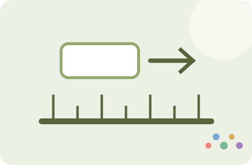
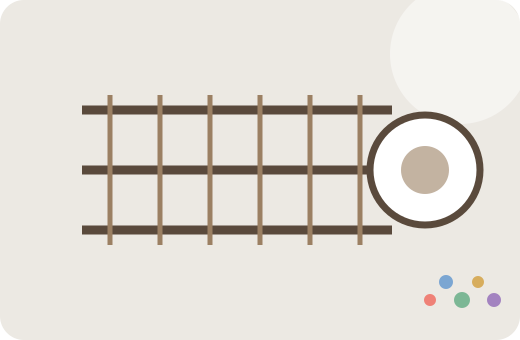

현재 사용 가능
평수 계산기
㎡ 직접 입력 또는 가로×세로로 면적을 구하고 평·ft²·yd²로 변환합니다.
Factory OneFREE
도면과 현장에서 반복해서 계산하는 면적, 축척, 철근 중량, 콘크리트 물량을 실제 입력조건과 단위까지 확인할 수 있도록 만들었습니다.

㎡ 직접 입력 또는 가로×세로로 면적을 구하고 평·ft²·yd²로 변환합니다.

1:N 축척의 도면길이·실제길이와 축척 변경 출력비율을 계산합니다.

직경·길이·수량·여유율을 기준으로 kg, ton, 재료비를 계산합니다.
슬래브·벽체·원형기둥의 m³, 여유량, 레미콘 대수를 계산합니다.
각 도구는 계산 결과만 보여주지 않고 사용한 단위, 공식, 여유율과 근사식 여부를 함께 표시합니다. 실제 발주·도면 검토에서는 프로젝트 규격과 설계기준을 우선하고, Factory One 결과는 빠른 검토와 교차확인에 활용하세요.